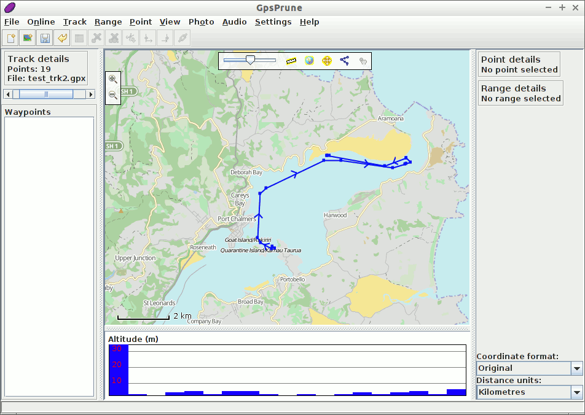
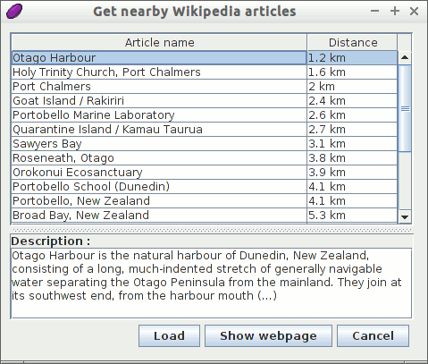
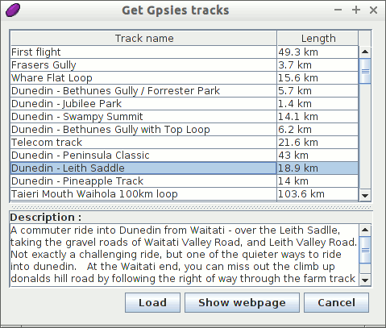

GpsPrune Quickstart¶
GpsPrune ist eine Java Anwendung für die Visualisierung und das Editieren von Koordinatendaten. Es kann zur Aufbereitung und zur Analyse von GPS Daten verwendet werden.
In diesem Quickstart werden wir Daten die sich lokal auf OSGeo-Live befinden laden und anzeigen. Außerdem werden wir online auf Informationen zugreifen. Daher ist es sinnvoll eine Internetverbindung vorliegen zu haben.
Contents
Start GpsPrune¶
From the Start menu, choose . This will then give you the empty window shown below.

Nun werden wir eine Datei über den Menüeintrag laden. Wählen Sie eine Datei. Die Datei kann entweder eine GPX-, KML- oder KMZ-Datei sein. Darüberhinaus können kommaseparierte oder tab-separierte Dateien geladen werden. Eine geeignete GPX-Datei mit einigen Tracks findet sich unter ~/data/vector/gpx/test_trk2.gpx. Laden Sie diese Datei.

Da die Datei zwei Tracks enthält, werden wir aufgefordert welche geladen werden soll/en. Wählen Sie nur den ersten Track aus und klicken Sie ok.
Jetzt sollten Sie den Track in blau auf einem weißen Hintergrund sehen. Sofern dieser Track über Wegpunkte verfügen würde (die er nicht hat), würden diese ebenfalls mit ihren Namen angezeigt. Unter Hauptkarte wird ein Höhendiagramm angezeigt, sofern der Track über Höhenangaben verfügt.

Falls eine Netzwerkverbindung vorliegt, können Sie Karten über den Globus Button oder über die Menüoption hinzuschalten.

Jetzt können Sie die Karte mit der Maus rumschieben und ein- und auszoomen. Das Zoomen kann per Mausrad oder über Doppelklick erfolgen. Über den gedrückten rechten Mausbutton kann ein Rechteck aufgezogen werden. Über das Kontextmenü stehen weitere Optionen zur Auswahl.
Anpassen der Ansicht¶
Andere Kartendarstellungen sind unter der Menüoption . Schauen Sie sich einmal eine alternative Karte an wie beispielsweise die „Cyclemap“ (Radkarte). Diese verwendet Karten von OpenCycleMap, um für das Wandern und Rad fahren zusätzliche nützliche Information wie Höhenlinien und Radwege anzuzeigen.
{kind=link}
Advanced Functions¶
Now that we can load and view files from the included file system, let’s see if we can supplement this with some online information as well, using some more advanced functions.
Wikipedia¶
Lassen Sie uns nun ein paar mehr Informationen über die Lage des Tracks finden. Wir können dies indem wir einen Punkt auswählen und anschließend den Menüeintrag auswählen. Diese Aktion zeigt eine Liste von Artikeln, deren Koordinaten am nächsten zum ausgewählten Punkt liegen. Per Klick auf einen Eintrag werden weitere Informationen in der unteren Box angezeigt.
Sie können über den Button Laden diesen Punkt in GpsPrune laden, oder über Webseite anzeigen die Wikipedia-Seite im Browser öffnen.
Gpsies¶
We can also use an online service to download another track from the same area. We can use the menu command to search for tracks on the website gpsies.com. Again, we get a list of matching entries, and we can select one to view the description.
Klicken Sie auf Laden, um den Track zu den bereits vorhandenen Daten zu laden. Nun sehen Sie beide Tracks in einer Ansicht.
Distanzmessungen¶
To find out how long the climb is, we will select just the part of the track which contains the climb, and then we will be able to view the properties of this selected range, such as the distance, climb and descent.
- Click on the point at the start of the climb, just north of Dunedin, to select it.
- Select to make this point the start of the selection.
- Select a point at the top of the climb by clicking on the highest point of the altitude profile.
- Select to finish the selection.
- You can now see in the „Range details“ section that this part of the track is 8.55 km long, climbs 346 m and descends just 10 m.

Weitere Aufgaben¶
- Select a point in the track and delete it with
- Draw your own track with Create series of points from the right-click menu and measure the total distance
- Export an image of your track with
- If you have your own track files in any of the formats gpx, kml, kmz or csv, load one of these into GpsPrune and view it using one of the available maps
GpsPrune auf anderen Systemen verwenden¶
Nachdem Sie GpsPrune ausprobiert haben, kann es sein dass Sie GpsPrune auf einem anderen System benutzen wollen, egal ob das System Linux oder Mac OSX oder Windows ist. Manche Linuxdistributionen enthalten GpsPrune in den normalen Software Tools, Sie müssen nur nach „Prune“ oder „Gpsprune“ suchen. Anderenfalls können Sie die aktuelle Version als Jardatei von der Webseite herunterladen.
It doesn’t need to be installed, but it does need a java runtime to be installed, version 1.5 or higher. You can extend GpsPrune’s functionalities by installing other free software, such as GPSBabel, Gnuplot, Exiftool and Java3d.
Sobald Sie GpsPrune auf Ihrem System installiert haben, können Sie Ihre Einstellungen über den Menüeintrag speichern. Ihrem Einstellungen sind liegen beim nächsten Start von GpsPrune weiterhin vor.
Sie die heruntergeladenen Karten-Kacheln auch herunterladen. Dies erfolgt durch Auswahl des Menüpunktes speichern: Menuselection: :Settings –> Save maps to disk und die Auswahl eines Verzeichnisses, in das die Bilder gespeichert werden sollen. Lokal vorliegende Kacheln beschleunigen die Darstellung, da die Bilder nicht nochmals herunterladen werden müsssen.
Weiterführende Literatur¶
- GpsPrune home page: https://activityworkshop.net/software/gpsprune/
- Screenshots: https://activityworkshop.net/software/gpsprune/screenshots.html
- How-tos and instructions: https://activityworkshop.net/software/gpsprune/how-tos.html